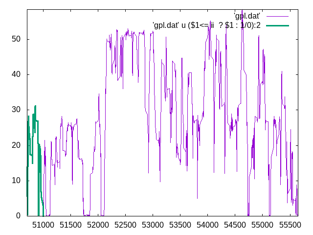
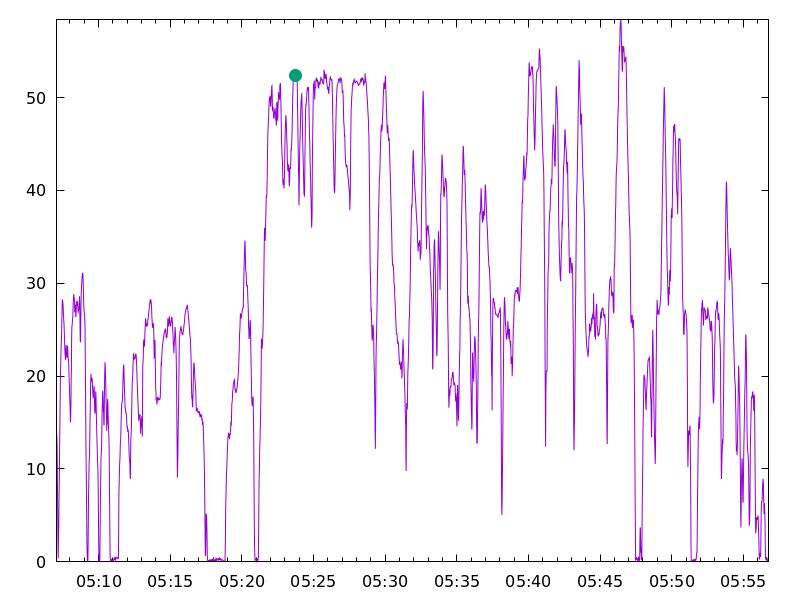

Durch einen Post auf Mastodon wurde ich auf eine Idee gebracht...
Der Post beschrieb die Idee, Live-Video mit einer Darstellung des gefahrenen Höhenprofils und/oder der Darstellung der gefahrenen Geschwindigkeit zu überlagern.
Ich hatte so etwas vor vielen Jahren einmal mit Java realisiert: Wir hatten damals die Live-Aufnahmen der Dashcam mit GPS-Daten verheiratet: unten links war im Kamerabild eine Miniaturkarte von OpenStreetMap eingeblendet, die immer auf den aktuellen Standort zentriert war, der mittels GPS-Empfänger ausgelesen wurde.
Dieses Mal wollte ich aber kein Java-Programm schreiben, sondern legte mir andere Werkzeuge auf der Werkbank zurecht: AWK und Gnuplot.
Mit AWK konvertierte ich einen rohen Mitschnitt von NMEA-Daten aus dem GPS-Receiver (ich nutzte hier die GPRMC-Pakete, das lässt sich natürlich auf alle anderen NMEAS-Botschaften anpassen) zunächst in ein etwas Gnuplot-freundlicheres Format - vor allem, was die Zeit anging:
gawk -F "," '$1=="$GPRMC" && $3 != "V" {print substr($10,1,2)"/"substr($10,3,2)"/"substr($10,5,2)"-"substr($2,1,2)":"substr($2,3,2)":"substr($2,5,2)"\t"$10"\t"$2"\t"$8}' input_nmea.TXT>gpl.dat
Danach konnte ich daran gehen, das Gnuplot-Skript zu entwerfen - die Grundidee war, dass ich die Gesamtdaten des Tracks darstellen wollte und darüber überlagert die Daten bis zu einem gewissen Zeitpunkt - dieses Bild hier zeigt einen frühen Entwurf dessen, was ich damit zum Ausdruck bringen wollte:

Früher EntwurfKurz danach fiel mir noch eine weitere Möglichkeit der Visualisierung ein - Man könnte doch auch die Gesamtdaten mit einem Marker genau zu einem gewissen Zeitpunkt überlagern - dieses Bild aus einer späteren Phase des Entwurfs zeigt diese Variante:

Früher EntwurfVariiert man den Zeitpunkt zwischen Beginn und Ende des Tracks und speichert die jeweils gerenderten Abbildungen, kann man darauf eine Animation erstellen. Dazu kam das folgende Gnuplot-Skript zum Einsatz:
stats "gpl.dat" using 4 name "A"
set xdata time
set timefmt "%d/%m/%Y-%H:%M:%S"
plot 'gpl.dat' using 1:4
min_y = GPVAL_DATA_Y_MIN
max_y = GPVAL_DATA_Y_MAX
min_x = GPVAL_DATA_X_MIN
max_x = GPVAL_DATA_X_MAX
set format x '%H:%M'
set xrange[min_x:max_x]
set yrange[min_y:max_y]
do for [ii=0:A_records] {
set terminal pngcairo transparent size 800,600
set size 1,0.5
filename = sprintf("tmp/gnuplotanim/%05d.png", ii)
set output filename
#Visualisierung Variante 1
#plot 'gpl.dat' using 1:4 w lines title "",'gpl.dat' u ($0<= ii ? timecolumn(1) : 1/0):4 w lines lw 3 title ""
#Visualisierung Variante 2
plot 'gpl.dat' using 1:4 w lines title "",'gpl.dat' u ($0 == ii ? timecolumn(1) : 1/0):4 w p pt 7 ps 2 title ""
}
Dabei wurde die Höhe des Diagramms noch ein wenig angepasst, um dem Hintergrund (zum Beispiel Live-Kamerabild) mehr Geltung verschaffen zu können. Die endgültige Größe und Position des Diagramms kann ebenso wie die Größe des erzeugten Bildes und das Styling des Diagramms in weiten Grenzen angepasst werden - mir ging es lediglich um die Mechanik des Ganzen.
Zum Schluss kann man - zum Beispiel mittels ffmpeg - die Einzelbilder zu einer Animation zusammenfassen, indem man ein Kommando wie dieses hier ausführt:
ffmpeg -r:v 1 -start_number 50704 -i "tmp/gnuplotanim/%05d.png" -codec:v libx264 movie.mp4
Dieses Kommando erzeugt eine Animation in Echtzeit: sie dauert exakt so lange, wie die Aufzeichnung des Tracks gedauert hat und eignet sich daher sehr gut als Overlay des Live-Kamerabilds. Das wird dadurch erreicht, dass mittels -r 1 eine Framerate von einem Bild pro Sekunde vorgegeben wurde - der Originaltrack wurde mit einem Datenpunkt jede Sekunde aufgezeichnet.
Hier ist das Resultat, das FFMpeg für den Beispieltrack nach Behandlung mit AWK und Gnuplot wie beschrieben ausspuckt (funktioniert wahrscheinlich nicht in Firefox...):
Artikel, die hierher verlinken
Gnuplot Snippets Projekt
28.04.2022
Nachdem ich hin und wieder über verschiede Aspekte von Gnuplot berichtet habe, habe ich mich entschieden, diese über die Jahre gewonnenen Erkenntnisse zu systematisieren und endlich mal davon wegzukommen, immer das letzte Gnuplot Skript zu kopieren und anzupassen.


Vor 5 Jahren hier im Blog
-
esp-link und GPS-Logger
01.04.2019
Nachdem ich bereits angekündigt hatte, den ESP8266 als Wireless-Bridge für serielle Verbindungen nutzen zu wollen, habe ich nun ein konkretes Projekt damit umgesetzt.
Weiterlesen...
Tags
Android Basteln C und C++ Chaos Datenbanken Docker dWb+ ESP Wifi Garten Geo Git(lab|hub) Go GUI Gui Hardware Java Jupyter Komponenten Links Linux Markdown Markup Music Numerik PKI-X.509-CA Python QBrowser Rants Raspi Revisited Security Software-Test sQLshell TeleGrafana Verschiedenes Video Virtualisierung Windows Upcoming...
Neueste Artikel
- Funktionen mit mehreren Rückgabewerten in Java
Da ich seit nunmehr einem Jahr bei meinem neeun Arbeitgeber beschäftigt und damit seit ungefähr derselben Zeit für Geld mit Python arbeite, haben sich gewisse Antipathien gegenüber Python vertieft (ich kann mit typlosen Sprachen einfach nicht umgehen) - aber auch einige meiner Gründe, Python zu lieben sind ebenso stärker geworden. Einer davon ist der Fakt, dass eine Methode in Python mehr als einen Wert zurückgeben kann.
Weiterlesen... - LinkCollections 2024 II
Nach der ersten losen Zusammenstellung (für mich) interessanter Links aus den Tiefen des Internet von 2024 folgt hier gleich die nächste:
Weiterlesen... - Konstruktive Geometrie mit dem Computer
Ich habe in einem vorhergehenden Artikel beschrieben, dass ich eine weitere neue Graphik-Primitive erstellt habe. Dabei musste ich mir meine verschütteten Trigonometrie-Kenntnisse wieder vor Augen führen - mit Bleistift und Papier. Das müsste doch auch anders gehen dachte ich mir und begann...
Weiterlesen...
Manche nennen es Blog, manche Web-Seite - ich schreibe hier hin und wieder über meine Erlebnisse, Rückschläge und Erleuchtungen bei meinen Hobbies.
Wer daran teilhaben und eventuell sogar davon profitieren möchte, muß damit leben, daß ich hin und wieder kleine Ausflüge in Bereiche mache, die nichts mit IT, Administration oder Softwareentwicklung zu tun haben.
Ich wünsche allen Lesern viel Spaß und hin und wieder einen kleinen AHA!-Effekt...
PS: Meine öffentlichen GitHub-Repositories findet man hier - meine öffentlichen GitLab-Repositories finden sich dagegen hier.